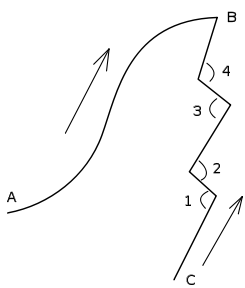
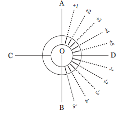
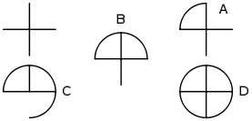
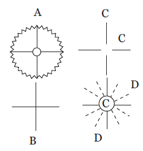

Беседа 677 от 3877 · Беинса Дуно
Езикът на природата
– Само светлият път на Мъдростта води към Истината.
– Тя постоянно ни весели.
Прочете се резюме от работите върху темата „Разлика между страх и съвест“.
Ще пишете върху тема № 11 „Разлика между нравствения и духовния човек“ и тема № 12: „Отличителните черти на мита и баснята“.

Сега, като разглеждате счупената линия AB, как си обяснявате пречупванията, които тя е претърпяла, та се образували ъглите 1, 2, 3, 4? Известно ви е, че когато светлината преминава през среди от различна гъстота, претърпява пречупване. Например, ако искаш да облагородиш някой човек, ти не трябва да му говориш с меки думи, не трябва да се проявяваш по отношение към него мекушав. Ако ти си мекушав, това ще произведе в него резултати на червения цвят. Някои казват, че трябва да бъдем към хората меки, в смисъл мекушави. отстъпчиви. Направете този опит с едно дете и наблюдавайте резултата. Започнете да галите това дете и ще видите, че цветът на лицето му почва да става розов, червен. В него се набира електричество – една енергия на червения цвят. и материята става неустойчива. Тази материя е още в своето първоначално развитие. При най-малкото побутване на тази материя може да стане експлозия. Такова избухване става и в животните, а някога даже и в растенията. Ще кажете: Защо това нещо не се забелязва в растенията? Защото червеният цвят понякога е пасивен, а някога – активен.
Вие трябва да посещавате планинските местности, за да видите на опит как стават даже и най-малките отклонения на светлината, когато пада при известни условия. Само така ще схванете, че и най-малките колебания на светлината, и най-малките светлинни енергии са вълни с различни дължини. Щом тия вълни срещнат известно съпротивление, веднага се пречупват. С този закон именно – пречупването на светлината –се обяснява образуването на скалистия път, който умът извървява в живота.
Съвременните физици още не са изучили при какъв ъгъл на пречупване на светлината, при какви стълкновения на светлината се образува червеният цвят; те не са изучили още при какви ъгли, при какви стълкновения на светлината се образува портокаленият, жълтият, зеленият, синият, виолетовият и другите цветове изобщо. Например, ако у вас се зароди някакво недоволство, явява се червеният цвят и вие ставате активен. Когато пък някой иска да ви обиди, вие, преди още да сте чули, какво ще ви каже, отваряте широко очите си и слушате. След като чуете обидните думи, вие възприемате съответния цвят. После свиете веждите си малко и във вас се започва една вътрешна реакция. Ако сте по силен от този, който ви обидил, във вас се заражда желание да го биете, но ако сте по-слаб, заражда се мисълта при какви условия да му отмъстите. Вие не сте изучавали какви ъгли се образуват при разтварянето на очите, при тяхното затваряне и т.н. Всички тия неща са интересни за проучаване.

Тия ъгли се образуват в мозъчното вещество у човека. Те възприемат и пречупват светлината и от тяхната големина зависят краските. Следователно разгледан от това гледище, мозъкът е различен в различните хора. Много от съвременните физиолози и лекари мислят, че всичките гънки на мозъка в човека са еднакви. Те не са изучавали ъглите на тия гънки. Значи в мозъка става един вътрешен процес. Ъглите изразяват само известни гънки, чрез които ние можем да трансформираме известна енергия, да отстраняваме известни цветове, други да превръщаме и да приемаме само онези цветове, които помагат за развитието ни. Трябва да знаете, че светлината е един от великите фактори не само за умственото развитие на човека, но и за характера и дългия му живот. Вие трябва да се наблюдавате, да проучвате въздействието на разните цветове върху вас. Аз имам голяма статистика по това, но не мога да ви дам някои от тия диагнози, понеже сте много страхливи. Някои от вас сте тъй страхливи, че изпадате в положението на ония слабодушни студенти по медицина, които, като изучават през третата година на своето студентчество симптомите на разните болести, сами заболяват. Те преживяват тогава всичките болести. Ако един студент по медицина заболее, критическа година за него е третата година на студентчеството му, когато изучава признаците на болестите. Мине ли тази година, той е вън от всякаква опасност. Същото нещо е и в окултната наука. Има известни симптоми, които, ако ви се кажат, произвеждат във вас обратни процеси и вие, наместо да се ползвате, изплашвате се.
Като ви говоря за червения цвят, не мислете, че той се събира във вас, за да ви създаде зло. Не, той се образува от излишък, той е резултат на неизползвана енергия. Във вашия организъм се събират много излишни вещества, които вие не използвате, и след време те ще ви създадат ред нещастия. Вие сте млади още, затова ще се стремите да дадете на лицето си правилен, естествен израз. Като ученици ще се пазите от всички неестествени гримаси, а вие имате много такива Например, кривите се на една или на друга страна почесвате главата си оттук-оттам, мърдате се и т.н. Но ако знаете какво може да ви донесе всяко движение, вие щяхте да бъдете внимателни в движенията си. Запример аз спазвам следното правило: не мога да закова две дървета във форма на кръст. Защо? Може да кажете, че това е суеверие. Не, кой и да е ученик, който изучава окултната наука, никога няма да закове две дървета на кръст. Често вие с пръстите си правите един кръст, подавате го някому и казвате: целуни го! Не, кръстът е най-голямото противоречие в света. Ако кръстът в известни случаи има някакъв смисъл, то е по особени съображения. Двете линии в кръста имат смисъл дотолкова, доколкото и скалите, облечени в зеленина. Кръстът показва едно грешно, дисхармонично състояние в природата. В окултната наука кръстът е място на падение, мъчение и страдание. Кръстът и ред други символи представляват езика на природата.


Та за всички тия навици, които днес имате, не се оправдавайте, че са прости навици, но трябва да знаете, че за да ги придобиете, вие сте учили дълго време, свирили сте, докато най-после са станали несъзнателни. Най-първо вие сте свирили и сте знаели смисъла на вашето свирене, а сега сте го изгубили. И знаете ли какво е станало, като сте изгубили смисъла на вътрешния оригинал? Уповавали ли сте се само на вашия ум, да видите в какво състояние ще се намерите? Дойде ли някой, затрие една нота от оригинала и вие си казвате: Липсва една нота, но коя ли беше тя? – Не знаете, коя беше. Турите друга вместо нея, но изопачавате оригинала. Дойде друг някой и той затрие някоя нота. Вие погледнете оригинала и си казвате: Не ме лъже паметта ми, имаше тук една нота, липсва тя. Коя ли беше? Припомните си уж, турите вместо нея друга нота, но още повече изопачавате оригинала. И след време погледнете, вие съвсем сте изопачили оригинала, т.е. съвсем сте изопачили характера си и вече коренно се различавате от онзи първоначален човек, от онзи първоначален път, по който сте вървели.
Често аз ви извеждам на летни екскурзии, но летните екскурзии са много опасни. В какво отношение именно? – Със зеленината в природата. Зеленият цвят предразполага човек към фантазиране, а с това той става мързелив. Фантазията в него работи много. Той, като дойде до някой извор, фантазията заговаря: Ех, да има сега тук едно агне хубаво опечено, малко винце, че като се наредим около този извор, той ще шумоли тъй приятно, а ние ще ядем, ще се веселим. Някой ще каже: Какво има да се мисли за агнето? Как тъй, какво! Докато се опече това агне, най-напред трябва да се заколи, после да видиш, как изтича неговата кръв; след това да го забодеш на шиш и да го въртиш на огъня, да се позачерви. И най-после ще го сложиш пред себе си, ще ядеш и ще си фантазираш за това-онова, ще разискваш върху разни идеи. Това не се отнася до вас, но до други някои, които биха се радвали на печеното агне. Мислите ли, обаче, че такава една екскурзия може да донесе благо на човека?
После, минавате покрай някоя гора и си казвате: Това място е много хубаво, то е тъкмо за скриване; като гонят някой човек, тук да се скрие. Да, но да гонят някой човек не ще да е за някаква идея. Кой знае какво е направил! Може и да е за идея, но това ще бъде на сто случая един. Ето защо на окултните ученици се препоръчват зимните екскурзии. Когато цялото поле е покрито само със сняг, в твоя ум няма да се явява мисълта за никакво агне, за никаква кокошка. Ти ще носиш в ума си само една мисъл: синьото небе и белия сняг! Може да си кажете от време на време: Ех, да е малко по-топло! Но като погледнете белия цвят, той ще произведе едно духовно трептение, едно духовно повдигане в душата ви и вие ще си кажете: Не, и тъй е хубаво – навред синьо небе и бял сняг! Който иска да си влияе добре, зимните екскурзии със сняг са за предпочитане пред другите. От чисто окултно гледище вие може да си правите и умствени екскурзии, за да трансформирате състоянията си. Например вие сте неразположени духом, минавате през някаква криза – седнете тогава и мислено си направете една хубава зимна екскурзия: отиване, връщане, пътя, през който ще минете, всичко това ще извършите мислено.
Какво нещо са кризите? Те не са лошо нещо, те са неизбежни в пътя на ученика и зависят от мястото, през което минава той. Представете си, че вие вървите по пътя AB. Тук климатът е умерен, бури не стават и вие го изминавате без каквито и да са кризи. Но вие трябва да минете и през другия път – CB, който е с крайно променчива природа. Представете си, че тръгвате от C и вървите към B нагоре. Лятно време е, вие сте облечени тънко, не сте взели в съображение резките промени, които ще срещнете по пътя. Колкото се качвате нагоре към B, явява се едно силно течение, лапавица, вие почвате да треперите, простудявате се и ви хваща пневмония, от която боледувате 3–4 месеца. Като оздравеете, казвате си: Слава Богу, че с малко се отървах. Още веднъж не отивам на такава екскурзия.
Всички вие, младите, трябва да знаете, че в морето, през което минавате, стават бури. От първия ден на първата година, до последния ден на вашия живот, през целия този кръг ще минавате през кризи. Аз наричам тия кризи „морални бури“. На някои хора се случват по-малки бури, на някои – повече и по-големи. Тия морални кризи са извън вашето естество, не са свързани с естеството ви. Те ще дойдат, но вие не ги обяснявайте философски, а си кажете: Това е морална буря. Дойде ви едно изкушение, кажете си: Това е морална буря. Нахлуят във вас известни лоши мисли, не се смущавайте, кажете: това е морална буря. Ако сте умен, ще вземете предпазителни мерки, ще влезете на завет в кораба си, на някое спасително място. Ако сте изложени някъде на открито, ще пострадате. Тъй щото ще знаете: това са кризи, морални бури, които стават и в природата. Знайте обаче, че вътре във вас има известни инструменти, с които ви предупреждават в това, което има да ви се случи в живота. Такъв един инструмент, например, е вашата интуиция. Тя често ви предупреждава, казва ви: Бъдете внимателни, ще ви се случи нещо! Внимателни в какво? Ако сте в някой град, ще пътувате по краищата, а не по средата, защото ако вървите по средата, може да ви прегази някоя кола. Вие трябва да развивате интуицията в себе си! Тя не се проявява като мисъл в мозъка, но като едно дълбоко вътрешно чувство, като едно вътрешно пришепване. То не излиза и из гортана, но е едно чувство, което излиза някъде из под лъжичката. То ви пришепва тихо и спокойно, казва ви само да бъдете внимателни. В какво отношение да бъдете внимателни? – Да се пазите от лоши другари. Вие имате лоши другари, които не ви мислят добро/ Те искат да отвлекат вниманието ви, за да скъсате връзките си с източника на вашия живот. Това е злото, което те могат да ви направят. Дето и да вървите, през море ли минавате или през какъв и да е път, едно правило трябва да спазвате: за нищо на света не късайте връзката, с която сте слезли на земята и с която ще се качите горе! Докато се държите за нея, може да се завъртите 10 пъти около нея – нищо няма да ви стане. Скъса ли се тази връзка, вие сте една перушинка вече и можете да станете играчка в ръцете на съдбата. Как може да се скъса тази връзка? – Когато съзнанието ви не е будно. Сега, като наблюдавате живота, ще забележите: тия хора, които обичат да пият, събират се двама души заедно, напълнят чашките си, дигнат ги, прекръстосат ръцете си, казват: Хайде, приятелю, аз ще пия от твоята чашка ти от моята! – Искат да покажат, покажат, че се обичат. Да, това е обичта на огъня който пращи, хвърля искри надалеч. Има известни места в природата, до които като дойдете, опасно е. Добре че вие още не разбирате езика на природата. По дърветата по изворите, по реките, по горите, по всички планински места – навсякъде из природата са хроникирани всички добродетели и всички престъпления и отвратителни грехове, които хората са върши и отначало и до сега Някои хора казват: Да разбираме езика на природата! Няма по-ужасно нещо от това, да ви се отворят очите преждевременно и да видите какви лоши работи има написани в нея. Има и красиви работи написани в природата, но има и лоши!
Ще ме запитате: Как да познаем де има написани хубави неща из природата? Във всеки едного от вас има един вътрешен инстинкт, който ви подсказва: Тук спри, през тук мини, там не минавай! Ще се подчинявате на този инстинкт. Пътувате през някое планинско място, казвате си: Туй място не ми се харесва. Защо, как – не философствайте повече. Не се спирайте там! Ще продължиш пътя си, ще обиколиш тук-там, докато туй чувство вътре ти подскаже: Тук можеш да спреш. Вие може да кажете: Ами защо да не спра там? Ако бихте прочели историята на това място, вие никога не бихте спрели там. Следователно, когато ние пътуваме при сегашните условия на земята, при сегашната култура, малко места има, дето ние можем да се спрем и свободно да си отпочинем. Кое наричам „почивка“? Да си починеш всред природата значи да усетиш в себе си едно вътрешно облекчение, а в ума ти да проблесне велика мисъл. Някой път речеш да си починеш, веднага нахлуват в тебе груби мисли. Това не е почивка.
Един от важните въпроси в тази лекция беше въпросът за ъглите на очите. Най-първо ще се заемете да коригирате очите си. Това ще ви бъде една задача. Как ще ги коригирате? Ще вземете едно чието, ясно огледало и ще наблюдавате посоката на лъча, който излиза от очите ви. Накъдето гледате и както да гледате съзнанието ви трябва да бъде будно. Гледате към земята – съзнанието ви трябва да бъде будно. Гледате нагоре – съзнанието ви трябва да бъде будно. Щом отправите погледа си нагоре, ще мислите за Бога, за Вечното, за Безконечното, за светиите, за всички ученици, които са минали преди вас, за всички ученици, които се занимават с наука; ще мислите още за знание, за музика, за поезия – за всичко възвишено в света. Като погледнете надолу към черната земя, какво означава тя? – Черната земя, това са греховете на всички същества. Грехове има на земята, затова е станала черна. Тя представлява живот на сили, на хиляди и милиарди същества, които са живели лош живот и затова са свързани с нея и не могат лесно да се освободят. Ние някой път казваме: Колко са хубави тия дръвчета! Понякога в природата се среща едно съвпадение, а именно: ъглите, които се образуват от лъчите на вашите очи, съвпадат с ъглите на материята в земята и затова се случва някой човек да заспи в гората и повече да не се събуди. Ето защо в планински места може да лежите, но да не заспивате. Няма да се страхувате, но съзнанието ви трябва да бъде свързано с невидимия свят. Ще лягате и ще ставате, но будни ще бъдете, ако искате да сте в безопасност. Ще избирате по възможност южните и източните склонове, те са най-здравословните места. Там има повече събрана енергия от синия цвят. В северните склонове пък има повече събрана енергия от зеления портокаления и червения цветове.
После, ще обърнете внимание на шапките си, на косите си. Купувате си шапка, ще гледате по възможност да е валчеста, да няма много гънки, да не е много надиплена или начупена. Начупената шапка може да ви донесе много пакости. Когато човек си иачупва шапката, начупва си и характера. Гледам, някой поет си разчорлил косите. Няма по-лошо нещо от това. Ще гледате по възможност косите ви да са прибрани. По някой път те знаят по-добре своя път, отколкото вие да ги нареждате. Тъй както пада всеки косъм на главата, образува известен ъгъл. Тия ъгли на космите играят много важна роля при пречупването на светлината. Вие може да считате тия неща за много дребнави, но знайте, че животът е свързан само от дребни неща. Ако вие искате да си създадете характер, трябва да знаете, че той се създава от тия дребни неща във вашите косми. Щом космите ви не се подчиняват на вашата воля, щом палецът ви не се подчинява на вашата воля, вие трябва да се пазите. Всяко ваше движение трябва да бъде под контрол на волята ви. Казвате запример: Не зная какво ми стана, но не мога да сгъвам пръста си. Ще го сгъвате, няма да го оставите така. После казвате: Не зная какво става с моите косми, но много са щръкнали, не мога да ги прибера. Не, ще заповядате на космите си! Че ако вие не можете да заповядате на вашите косми, на кого ще заповядате тогава? Знаете ли кога щръкват космите на човека? – Когато човек не може да се контролира. Тогава гневът взима надмощие в него, той става нетърпелив и космите му щръкват, нахохорват се, не искат да се подчиняват. Щом стане тих и спокоен, щом стане търпелив, и космите му взимат своя път. Забелязали ли сте как изобразяват великите хора? – С гладко причесани коси и с прав път. У някои жени косите са причесани гладко и с прав път. – Това е добър знак. Космите трябва да падат еднакво и от едната, и от другата страна. Според какъвто ъгъл пада всеки косъм, такова влияние упражнява и върху характера на човека. Космите имат свой произход. Някой път ще ви задам тема „Кога са се явили космите в света.“ Това е една интересна студия, но доста трудна. В рибите косми няма, а мустаци има само тук-там.
Всички тия неща, които ви казвам, са потребни за вас, понеже вие сте още млади. Знаете ли защо ви давам тия предпазни мерки? Защото морето, през което минавате сега, е бурно и някои от вас ще минат през кризи: напред-назад, нагоре-надолу. Корабът няма да потъне, но пътникът все-таки може да направи карамбол.
И тъй, ще държите връзката с Бога! Ще внимавате очите ви да имат нормално състояние, да не правите несъзнателни движения с ръцете си например. Какви трябва да бъдат движенията ви? – Ще правите движения, които да ви са приятни, сами да сте доволни от тях. Като направиш едно естествено движение, съгласно със законите на природата, ти ще почувстваш голяма приятност в себе си. Пък като направиш едно неестествено движение, ще почувстваш, като че те прерязва нещо с нож. В погледа на очите си и в обръщенията си към хората трябва да бъдете много внимателни. То не е за другите, то е необходимо за вашето вътрешно развитие. Като окултни ученици вие трябва да се отличавате!
Някой път, когато човек се уплаши, той отваря очите си, а когато иска да приеме по-малко външни впечатления, той си затваря очите. Понякога човек си държи главата наведена наляво, друг път надясно, някога назад или напред, но всички тия движения не са случайни те са резултат на нещо. Това са все ъгли, които показват известна дисхармония в човека. Окултният ученик не трябва да бъде, както казват французите, „конте“. Що е „конте“? – Когато човек се облече, докара, едва стъпва на пръстите си и току поглежда навсякъде. Но това е изопачаване на характера. Когато вървиш, движенията ти всякога трябва да бъдат в хармония с твоята обща мисъл, с твоето общо чувство. Под „общо“ аз подразбирам човешкото в тебе. И волята ти трябва да бъде в хармония с движенията ти. Туй е езикът на природата. Сега, ще държите будно съзнанието си и ще пазите връзката си с Бога! Това ще ви бъде задача за един месец (до 16.1.1924 г) Ще мислите върху това всеки ден по 15 минути и то като вървите по пътя. Ще вървите свободно, съзнанието ви ще бъде будно, без да ви забележат хората. Естествени ще бъдете! Може да преминавате от единия тротоар на другия, ще вървите между хората и никой няма да ви забелязва.
Будно съзнание и правилни движения на очите! Според този закон направете един опит да видите как действа погледът на очите ви върху другите. Срещнете някоя ваша сестра, погледнете я, като отправите погледа си нагоре, към Бога, усмихнете ѝ се вътрешно, слабо, незабелязано и вижте как ще се почувства тя. Като я погледнете така, тя ще види във вашия поглед една мека, нежна усмивка и ще се зарадва. Като срещнете някой млад брат, погледнете го така, като че го познавате. Тия погледи влияят отлично и върху вас, и върху окръжаващите ви. Някой ден може да направите някой несполучлив опит – наместо да отправите лъча нагоре, вие го отправяте надолу. Тогава ще ви глобят. Човек като прави опити, може да направи някоя погрешка, но това да не ви смущава.
Тайна молитва.
– Само светлият път на Мъдростта води към Истината.
– Тя постоянно ни весели.
9 лекция на Младежкия окултен клас, държана от Учителя на 16.ХII.1923 г. в гр. София